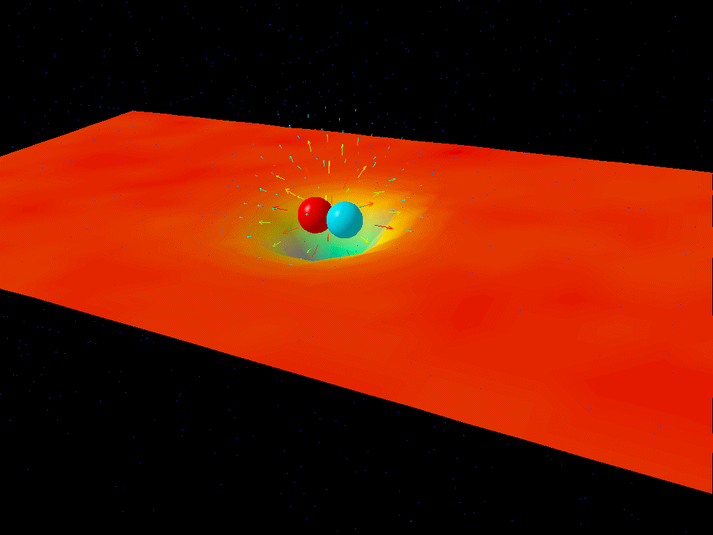

Many important recent advances in our understanding of the physical world have been driven by large-scale computational modeling and data analysis, for example, the 2012 discovery of the Higgs boson, the 2013 Nobel Prize in chemistry for computational modeling of molecules (received by biophysicists), and the 2016 discovery of gravitational waves. It has become clear that a large fraction of theoretical and experimental physicists require a high level of computational sophistication to competently pursue many aspects of their work, a trend that is likely to grow with time as computers increase in power and experimental datasets grow exponentially. The Computational Physics option will allow you to explore Physics with the tools of the 21st century.
In Computational Physics you learn to use the computer as a laboratory for solving advanced physics problems. Numerical simulations will increasingly dominate our approaches to studying physical systems, in line with the increase in computational capabilities. Possible applications range from studying quantum physical systems in nanotechnology and the characteristics of new materials, subatomic physics, from lattice quantum chromodynamics simulations to studies of stars and the synthesis of the elements, to oil flow through various rock strata, physics applications to life science and computational neuroscience, semi-conductor technology and simulating quantum computers and quantum computing. Research includes both pure research projects as well as more applied research.
Other possibilities for thesis work can be related to pedagogical questions and the use of computing in teaching at the university level. Thesis topics can span from developing numerical exercises and projects for university or college courses to the development and participation in advanced assessment studies.
This is new program at the University of Oslo and through various activities, spanning from common meetings and field trips to various social gatherings, we will gradually build up a top learning environment where you will thrive as a student and learn to develop your scientific creativity. The University of Oslo offers a rich and active student environment with more than 200 student led activities and organizations.
All study options offer possibilities for stays abroad. Planning a semester or more abroad or performing parts of your thesis at a collaborating institution is something we highly recommend. As a student in this program you have a number of interesting international exchange possibilities. The involved researchers have extensive collaborations with other researchers worldwide. These exchange possibilities range from top universities in the USA, Asia and Europe as well as leading National Laboratories in the USA. Don't hesitate to get in touch with the contact person of your study option in case you plan to spend some time abroad. Studies at other institutions can be planned from the very first semester of this Master of Science program.
Students at the University of Oslo may choose to take parts of their degrees at a university abroad. The University of Oslo has exchange agreements with other universities in different parts of the world. The MN Faculty has additional exchange agreements with many universities abroad.
A significant aspect of this program is the ability to offer new educational opportunities that are aligned with the needs of a 21st century workforce. Many companies are seeking individuals who have knowledge of both a specific discipline and computational modeling. And candidates who are capable of modeling and understanding complicated systems in natural science, are in short supply in society. The computational methods and approaches to scientific problems that you will learn when working on your thesis project are very similar to the methods you will use in later stages of your career. To handle large numerical projects demands structured thinking and good analytical skills and a thorough understanding of the problems to be solved. This knowledge makes you unique in the labor market.
Career opportunities are many, from research institutes, universities and university colleges and a multitude of companies. The program gives an excellent background for further studies, with a PhD as one possible goal.
The program has also a strong international element which allows students to gain important experience from international collaborations in science, with the opportunity to spend parts of the time spent on thesis work at research institutions abroad.